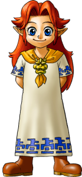

Le lait Lonlon est reconnu dans toute la région, ce lait artisanal ne vous laissera pas indifférent.
Cremia et Romani sont deux soeurs travaillant au ranch Romani, elles préparent du lait tous les jours puis le revende au marché de Bourg-Clocher.

Si vous habitez à Hyrule, ça sera Malon qui fabriquera le lait.
Et même si ça n'a rien à voir vous pourrez aussi y apprendre le chant d'Epona, qui sert à appeler votre cheval d'où que vous soyez !
